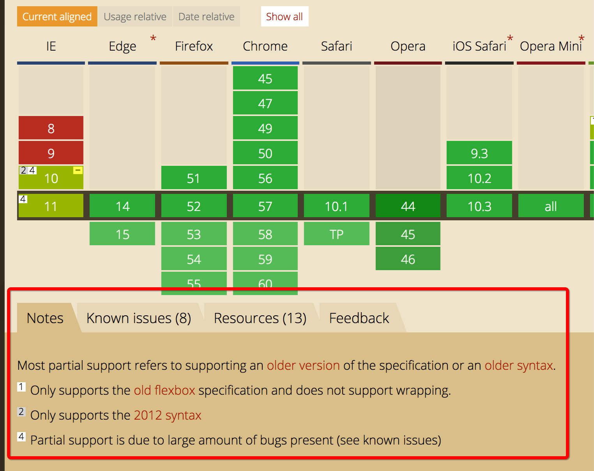

一、背景
在前端布局这块儿 CSS Flexible Box Layout 使用得相当广泛了。但是这个css属性并非想象的那么简单，它有3个大版本的语法规范，这导致了我们在实际使用中不知道使用哪个版本。
有文章指出，我们混合三个版本来实现更多浏览器兼容性（更多参考https://css-tricks.com/using-flexbox/ )。但是这种方案在实践中使用起来并不太友好：
1.假如我们手动写三种版本，太复杂，如下
.flexbox {
display: -webkit-box;
display: -webkit-flex;
display: -moz-flex;
display: -ms-flexbox;
display: flex;
}
2.当然我们可以使用sass库。
比如https://github.com/mastastealth/sass-flex-mixin ，或者优秀的compass http://compass-style.org/reference/compass/css3/flexbox/。 但是我理解不是所有的人都喜欢使用一个库来解决问题，也不是所有人都喜欢使用sass（像我这样更喜less的人就比较迷茫，当然less库也有，但是我没找到一star比较高的）
二、期望
有没有不依赖库，能够像用一般的css属性一样使用flex布局。答案当然是有的，只是你必须对flex语法的三个版本充分理解，尤其是每个版本对应的浏览器兼容性。
三、理解三个版本
打开标准 https://www.w3.org/TR/css-flexbox-1/
This version:
http://www.w3.org/TR/2016/CR-css-flexbox-1-20160526/
Previous Versions:
http://www.w3.org/TR/2016/CR-css-flexbox-1-20160301/
http://www.w3.org/TR/2015/WD-css-flexbox-1-20150514/
http://www.w3.org/TR/2014/WD-css-flexbox-1-20140925/
http://www.w3.org/TR/2014/WD-css-flexbox-1-20140325/
http://www.w3.org/TR/2012/CR-css3-flexbox-20120918/
http://www.w3.org/TR/2012/WD-css3-flexbox-20120612/（2012年 diplay:flex)
http://www.w3.org/TR/2012/WD-css3-flexbox-20120322/
http://www.w3.org/TR/2011/WD-css3-flexbox-20111129/
http://www.w3.org/TR/2011/WD-css3-flexbox-20110322/（2011年 display: flexbox)
http://www.w3.org/TR/2009/WD-css3-flexbox-20090723/ （2009年 display: box）
网络上大多数文章将flex分为了2009， 2011， 2012年三个版本，它们分别的代表属性为
.flexbox {
display: -webkit-box; /**2009 年 **／
display: -ms-flexbox; /**2011 年 **／
display: flex; /**2012 年 **／
}
与w3c文档还是比较吻合的，这里注意按年分划分的版本在w3c文档里对应开始提出的年份，比如
http://www.w3.org/TR/2012/WD-css3-flexbox-20120322/
这个版本是2012年提出的，它实际是display: flexbox的最后一个版本。并非指的是diplay:flex 之所以我们要提这个点，是因为你看到2012年字眼的时候，一定要认清楚，到底说的是 display: flexbox 还是 display: flex ( canuse notes 2 Only supports the 2012 syntax 这里指的是 display: flexbox 稍后我们谈兼容性将进一步说明）
常用版本属性对照表
| Final syntax | 2009 syntax | 2011 hybrid syntax |
|---|---|---|
| display: flex | display: box | display: flexbox |
| flex-direction: row | box-orient: horizontal | box-orient: horizontal |
| justify-content: flex-start | box-pack: start | box-pack: start |
| align-items: flex-start | box-align: start | box-align: start |
| flex: 1 | box-flex: 1 | flex: 1 |
四、通过caniuse进行兼容性分析
https://caniuse.com/#search=flex import china数据 可以看到如下notes

Most partial support refers to supporting an older version of the specification or an older syntax.
1 Only supports the old flexbox specification and does not support wrapping.
2 Only supports the 2012 syntax
4 Partial support is due to large amount of bugs present (see known issues)
这里的 notes1 中的old flexbox指的是2009年的版本display: -webkit-box，notes2 指的是2011年的 display: flexbox 版本
兼容性小结分析
我们从caniuse中分析出兼容性
1.2011年版本基本只有ie10支持，并且必须带-ms-前缀, ie9以及更老的不支持flex布局
2.chrome 只支持2009年版本（带前缀）以及最新的2012年版本（不支持2011版本）
3.android 火狐, ios safari等基本与2一致
五、使用场景最佳实践总结
1.如果我们是使用手机端开发（ie等非weikit系内核不考虑了）
android、ios、其它webkit系浏览器。他们都支持2009版本带前缀，以及2012版本。
我们使用2009年版本就够了（见附属性向前兼容）：且只需要写display: -webkit-box（不带前缀的感觉没必要写）
.flexbox {
display: -webkit-box;
}
2.如果我们使用pc端支持主流浏览器（火狐，ie，safari，chrome），不考虑ie9及其以下ie浏览器
那我们必须使用 2009语法(火狐新老版本，chrome新老版本，android新老版本 ，ios 新老版本， 为何兼容浏览器新老版本且可以同时省去2012语法见附属性向前兼容）和 2011语法（ie10+)
这里注意必须同时使用：2009语法带前缀（不带前缀的感觉没必要写）+2011带前缀
.flexbox {
display: -webkit-box;
display: -moz-box;
display: -ms-flexbox;
}
总的来说按你想兼容浏览器，支持的最老语法版本来写就对了，webkit ，moz 支持的最老语法版本为2009，ms支持的最老语法版本为2011
附（属性向前兼容）
对比chrome(版本4-20，只支持带前缀 2009版本语法，版本20以后支持2012语法）那么，新的chrome（像这种第三方浏览器，更新比较容易，我们一般关注较新的版本）会支持2012语法，它会向前兼容，也支持2009语法。注意向前兼容成立必须是语法属性出现在历史浏览器版本里过，可以对比附（使用前缀与否）火狐例子
附（opera 是webkit系）
为什单拿opera说，opera在caniuse 上面只显示了不支持(版本10.1, 11.5)，以及带-webkit-前缀支持(版本15,16)以及完全支持(版本17及其以后），从opera的历史版本来看，并没有某个版本只支持notes1，这说明什么，opera只支持2012年版本语法（及当前最新flex语法标准）。按道理应该是这样，但是经测试opera （版本444）支持2009带前缀，这里caniuse并没体现，估计opera也是webkit内核系导致
附（使用前缀与否）
凡事老版本带前缀的且出现在caniuse列表里，新版本不需要带前缀与之同时也会向前兼容带设备前缀属性。
举例：chrome (版本21-28 支持带前缀flex，及代码必须这样写display: -webkit-flex ), 而chrome(版本29及其以后不需要前缀也可以，及display: flex ，但是版本29以后的浏览器也是识别display: -webkit-flex ,所以chrome版本在29及其以后，就写带前缀的属性就行display: -webkit-flex
而火狐（版本2-21 支持2009语法带前缀，版本22及其以后完全支持2012语法，注意版本历史中，并没有出现2012语法带前缀支持），所以火狐能识别display: -moz-box ,display:flex 但并不识别display: -moz-flex
六、参考：
https://dev.opera.com/articles/advanced-cross-browser-flexbox/#fallbacks
http://stackoverflow.com/questions/17447807/cross-browser-support-for-css-flexbox
https://www.w3.org/TR/css-flexbox-1/
https://github.com/philipwalton/flexbugs